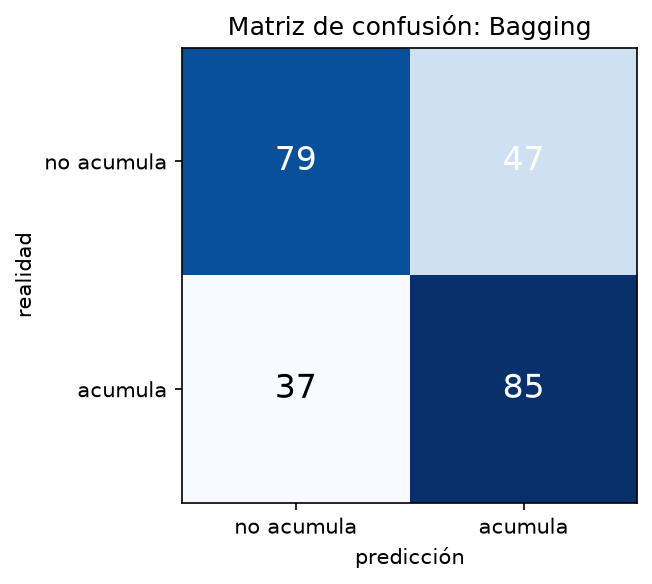

Informe final · 15
Guía de estudio del informe, desde cero
Esta guía acompaña al informe final (informe/informe.pdf) sección por sección, sin saltarse nada: el resumen, la introducción, cada tabla, cada figura, cada modelo, cada hiperparámetro, las conclusiones, las limitaciones, las referencias y el anexo. Está escrita para alguien que nunca vio estadística ni aprendizaje automático. Si lees esta guía con el informe al lado, deberías poder explicar cualquier parte del informe con tus palabras.
Léela en orden la primera vez: cada parte usa ideas de las anteriores. Los títulos siguen la numeración del informe (1.1, 1.2…, tabla 1, figura 1…), para que puedas buscar cada cosa en el PDF. Cada concepto tiene la idea en simple (con un ejemplo de la vida diaria), en nuestro caso (qué significa con nuestros datos) y, cuando hace falta, cuidado con… (el error típico). Al final de cada parte hay preguntas de autoevaluación: la respuesta se abre con un clic.
Antes de empezar: las palabras que se usan todo el tiempo
Los datos: filas, columnas y variables
Imagina una planilla de Excel. Cada fila es una cosa que se observa; cada columna es una característica de esa cosa. En el informe:
- Una fila es un tipo de proceso en un territorio: por ejemplo, «procesos ordinarios civiles de Sucre». No es un juicio individual: es el resumen de todos los juicios de ese tipo en ese lugar durante 2023.
- Una variable es una columna que se usa para predecir: la materia, cuántas causas ingresaron, cuántos juzgados hay…
- La variable objetivo es la columna que se quiere adivinar: si el proceso acumuló mora o no.
Una causa y sus cinco números
Piensa en una cuenta bancaria. El 1 de enero hay un saldo; durante el año entran depósitos y salen retiros; el 31 de diciembre queda otro saldo. Los juzgados funcionan igual con las causas (los expedientes):
| Número | En una cuenta bancaria | En un juzgado |
|---|---|---|
| stock heredado (pendientes al inicio) | saldo del 1 de enero | causas que venían abiertas del año anterior |
| ingresos del año | depósitos | causas que entraron durante el año (nuevas, por excusa, preliminares, cautelares) |
| atendidas | todo el dinero con el que se trabajó | stock heredado + ingresos |
| resueltas | retiros | causas que se terminaron en el año |
| pendientes al cierre | saldo del 31 de diciembre | causas que siguen abiertas |
Siempre se cumple: atendidas = stock heredado + ingresos = resueltas + pendientes al cierre. A esto el informe lo llama la identidad contable. Más detalle en conceptos jurídicos.
Qué es un «modelo» y qué es «entrenar»
Un modelo es una receta que recibe datos y devuelve una respuesta. Un médico con experiencia mira la fiebre, la tos y la edad de un paciente y dice «probablemente es gripe»: aprendió de miles de pacientes anteriores. Un modelo hace lo mismo con números: entrenar es mostrarle muchos ejemplos de los que ya se sabe la respuesta, para que encuentre el patrón. Predecir es usarlo con un caso nuevo.
Lo que devuelve nuestro modelo es una probabilidad entre 0 y 1 (o entre 0 % y 100 %) de que el proceso acumule mora. Si pasa de 0,5 (el umbral), se dice «acumula».
La portada y el resumen
La portada lleva el escudo de la Universidad Mayor de San Andrés, la materia (Análisis de Datos), la docente (M.Sc. Madelina Loza Soliz), los tres integrantes, el lugar y la fecha. El título del informe es una pregunta: «¿Qué procesos judiciales acumulan mora?». El subtítulo dice las cuatro etapas que pidió la docente en la pizarra: preprocesamiento, modelos de clasificación, evaluación y despliegue.
El resumen cuenta todo el informe en un párrafo. Traducido:
- El Consejo de la Magistratura publica sus estadísticas en un PDF de 774 páginas. En la primera parte del proyecto ese PDF se convirtió en tablas.
- Este informe usa esas tablas para una pregunta: con lo que se sabe de un tipo de proceso (materia, territorio, stock heredado, causas que entran, juzgados), ¿se puede anticipar si este año resolverá menos causas de las que recibe?
- Se usaron 1.240 procesos; 608 acumulan mora (49,0 %).
- El modelo de 5 variables se publica en una página web pública, empaquetada con Docker y puesta en un servidor (un VPS) con Docker Compose. Está en línea en proyanalisis.maxi42.space (se explica en la parte 4).
- El mejor modelo (Bagging) obtiene un ROC-AUC (una nota de 0,5 a 1 que se explica en la parte 3) de 0,753 en la validación y 0,729 en la prueba. El modelo publicado, de 5 variables (Gradient Boosting), obtiene 0,663.
- Lo más útil para predecir no viene del Anuario: son cocientes que el equipo construyó, como los ingresos por juzgado y la presión del stock.
Después del resumen está el índice: introducción, las cuatro secciones de la pizarra, conclusiones, limitaciones, referencias y el anexo de reproducción.
Introducción
El problema
La idea en simple. Un juzgado es como una mesa de trabajo con una pila de expedientes. Si en el año despacha menos de lo que le llega, la pila crece: eso es acumular mora. Y cuanto más alta la pila, más espera cada persona que tiene un juicio.
El Anuario publica, para cada tipo de proceso de cada capital y provincia, las cinco cantidades de la tabla de arriba. Con ellas se puede saber después si un proceso acumuló mora. El informe pregunta si se puede saber antes, sin mirar las causas resueltas.
La variable objetivo
Se llama flag_acumula_mora («bandera de acumula mora»). Vale 1 si las resueltas fueron menos que los ingresos del año, y 0 si no. Es lo mismo que decir que la tasa de resolución (resueltas ÷ ingresos, la fórmula que usa el CEJA, un centro de estudios de justicia de las Américas) es menor que 1. Y por la identidad contable, es lo mismo que decir que la pila creció.
Como la respuesta es una de dos clases (sí o no), el problema es una clasificación binaria. Si la respuesta fuera un número (por ejemplo, cuántas causas crece la pila), sería una regresión.
Los datos
- Cada fila es un tipo de proceso + un territorio + una materia, por ejemplo «divorcio por mutuo acuerdo, Cochabamba capital, familia».
- Solo las cinco materias no penales: civil y comercial, familia, niñez y adolescencia, trabajo y seguridad social, y coactivo fiscal. Las penales quedan fuera porque el Anuario no publica sus causas resueltas, y sin resueltas no se puede saber si acumularon.
- De los 1.655 procesos no penales se usan los 1.240 que tuvieron movimiento (al menos una causa atendida). Hay 87 tipos de proceso distintos.
- Todo el código está en notebooks (cuadernos de Jupyter que mezclan código, resultados y texto): del 01 al 18 la construcción de los datos y el análisis exploratorio; del 19 al 22, lo que cuenta el informe.
Procesos ordinarios civiles de Sucre (cuadro 5.1.1.1, página 121 del Anuario). Empezaron 2023 con 770 causas heredadas; ingresaron 1.627; hay 14 juzgados civiles en Sucre. Se resolvieron 1.286 y quedaron 1.111 abiertas. Como 1.286 < 1.627, acumuló mora: flag_acumula_mora = 1. Volveremos a este proceso en cada parte.
Autoevaluación · Introducción
¿Qué significa que un proceso «acumule mora»?
Que en el año resolvió menos causas de las que le ingresaron, de modo que su pila de causas pendientes creció.
¿Por qué no se incluyen las materias penales?
Porque el Anuario no publica cuántas causas penales se resolvieron; sin ese dato no se puede saber si acumularon mora.
¿Por qué es una clasificación y no una regresión?
Porque la respuesta es una clase (sí o no), no un número.
1 · Preprocesamiento
La idea en simple. Antes de cocinar hay que comprar, lavar, pelar y cortar. El preprocesamiento es todo lo que se le hace a los datos antes de entrenar un modelo. La pizarra lo divide en tres: análisis exploratorio (mirar), limpieza (sacar lo que estorba o engaña) y conversión (dejarlo en el formato que el modelo entiende).
1.1 · Análisis exploratorio
De dónde vienen los datos
El Anuario es un PDF: se puede leer, pero no se puede calcular con él. Esta parte del informe resume el trabajo de los notebooks 01 a 18:
- Inventario y extracción (01 a 07). Se revisó cada una de las 774 páginas y se sacaron los números de los cuadros. Como los cuadros tienen formatos distintos, se usaron técnicas distintas: por posición, por coordenadas de cada palabra y por «firmas» de encabezado (dos páginas con los mismos títulos de columna son la misma tabla). Cada valor se guardó primero como texto, para no perder nada. Detalle en técnicas de extracción.
- Normalización (04 a 06). Se unificaron los nombres de materias y territorios y se convirtieron los textos a números con la convención boliviana: el punto separa miles y la coma separa decimales («86.285» es ochenta y seis mil). Resultado: 12 tablas con 85.953 filas, cada una con el cuadro y la página de donde salió.
- Validación (05). Se verificaron doce identidades contables del propio Anuario (por ejemplo, que atendidas = resueltas + pendientes). Se encontraron 117 discrepancias de la fuente: se registraron, no se «arreglaron». Ver validación y discrepancias.
- Integración (08). Se unieron las tablas en una «capa analítica» de 1.997 filas (procesos y otros detalles), con los recursos y el personal de cada territorio pegados a cada fila.
- Análisis exploratorio (09 a 18). Vacíos, indicadores de congestión, valores raros, la serie 2007–2023, dónde se concentra el rezago y la relación con el personal. Ver EDA e indicadores y la ampliación.
Qué dice el análisis exploratorio del objetivo
Las clases están casi equilibradas: 608 de 1.240 acumulan (49,0 %). Esto importa porque, si fueran 95 % «no» y 5 % «sí», un modelo tonto que siempre dice «no» acertaría el 95 % sin aprender nada. Con 49/51 ese truco solo da 51 %.
La proporción cambia según la materia: civil acumula en el 58 % de sus procesos; familia y niñez, en el 47 %; trabajo y coactivo, en el 40 %. En cambio, capital y provincia casi no difieren (48 % y 50 %).
Ninguna variable sola separa bien las clases. Para medirlo se usó la correlación de Spearman, que se escribe con la letra griega ρ («ro»):
Mide si, cuando una cosa sube, la otra tiende a subir (ρ positivo) o a bajar (ρ negativo). Va de −1 a +1; 0 es «no hay relación». En vez de usar los valores, usa su orden (el primero, el segundo…), así que un proceso gigante no pesa más que los demás. Como regla práctica: menos de 0,3 es una relación débil.
- Ingresos del año: ρ = 0,24. Los procesos que reciben más causas tienden algo a acumular.
- Presión del stock (stock heredado ÷ ingresos): ρ = −0,23. Los que heredan mucho en relación con lo que les entra tienden a no acumular: con muchas causas viejas en la mesa, el juzgado resuelve más de lo que recibe.
- Stock heredado solo: ρ = 0,04, casi nada. Pero dividido por los ingresos (la presión del stock), sí dice algo. Esa es la pista de que conviene construir variables nuevas.
Conclusión: ninguna variable alcanza sola; hace falta un modelo que combine varias.
Figura 1

- Izquierda: una barra por materia; el largo es el porcentaje de sus procesos que acumulan. La línea gris punteada es el promedio (49 %). Civil es la única claramente por encima.
- Derecha: un histograma (cuántos procesos hay en cada rango de valores) de la presión del stock, en verde los que no acumulan y en rojo los que sí. El eje está en escala logarítmica: cada paso hacia la derecha multiplica por 10 (0,1 → 1 → 10). Se usa porque los valores van de casi 0 a cientos. Se ve que los verdes están más a la derecha (más presión del stock) que los rojos, pero las dos montañas se superponen mucho: la variable ayuda, no decide.
1.2 · Limpieza
Fuga de información (tabla 1)
La idea en simple. Si a un estudiante le das el examen con las respuestas escritas al margen, saca 100, pero no aprendió nada y en el próximo examen fracasa. Fuga de información es darle al modelo, sin querer, una variable que contiene la respuesta.
En nuestro caso. La pila crece cuando se resuelve menos de lo que entra. Entonces cualquier columna calculada con las resueltas o con la pila al cierre es la respuesta disfrazada. Se sacaron 18 columnas, que son las de la tabla 1 del informe:
| Columnas de la tabla 1 | Por qué contienen la respuesta |
|---|---|
resueltas | el objetivo se define comparándola con los ingresos |
pendientes_fin, log_pendientes_fin | la pila al cierre: es el resultado del año |
tasa_resolucion y sus dos variantes | resueltas ÷ ingresos: es el objetivo con otro nombre |
tasa_congestion y su versión winsorizada | atendidas ÷ resueltas |
tasa_pendencia | usa las pendientes al cierre |
duracion_estimada_dias y su versión winsorizada | usa resueltas y pendientes al cierre |
acumulacion_neta_anual | ingresos − resueltas: es el objetivo en número |
flag_sin_resolucion_anual, flag_sin_movimiento, estado_gestion | marcas que se calcularon mirando las resueltas |
log_resueltas | las resueltas en logaritmo |
es_outlier_congestion_iqr, es_outlier_duracion_iqr | marcas de valores raros construidas con la congestión y la duración |
«Winsorizada» quiere decir que los valores extremos se recortaron a un tope; «log» es el logaritmo. Ninguna de las dos cosas quita la fuga: siguen siendo las resueltas transformadas. El notebook 19 tiene un control automático (un assert: una línea que detiene todo si algo no se cumple) que verifica que ninguna de estas 18 columnas entre al modelo.
Un modelo con fuga da resultados espectaculares (casi 100 % de aciertos). Cuando un problema difícil da resultados perfectos, lo primero es sospechar una fuga.
Qué filas entran
- Se excluyen los 415 procesos sin movimiento (cero causas atendidas): no entró ni había nada, no hay nada que predecir. 1.655 − 415 = 1.240.
- Hubo una tentación: usar solo los procesos que tienen tasa de congestión calculada (eran 1.122). Pero esa tasa se divide por las resueltas, y no existe cuando un proceso no resolvió nada. Quitar esos 118 procesos sería elegir los ejemplos mirando la respuesta: 67 de ellos acumulan mora. Es otra forma de fuga, más sutil: el modelo aprendería con un conjunto más fácil que el real. Por eso el filtro usa solo «atendidas > 0», que no depende del resultado.
Valores faltantes
La idea en simple. Un casillero vacío puede significar «se perdió el dato» o «no aplica». En el formulario de una persona soltera, el casillero «nombre del cónyuge» está vacío porque no aplica: rellenarlo con un nombre promedio sería absurdo.
- Casi todos los vacíos del Anuario son estructurales (no aplica). Dos formas de ingreso —preliminares y cautelares formalizados— solo existen en civil. En las demás materias el vacío significa cero, y se llenó con 0. Si se rellenara con la mediana se inventarían causas que no existen.
- El único faltante real es el número de tribunales del territorio (20 filas). Se rellena con la mediana (el valor del medio cuando se ordenan todos) calculada solo con los datos de entrenamiento, dentro del modelo. Así los datos de prueba no influyen en ningún valor (la razón se ve en 1.3).
Valores atípicos (figura 2)
Un valor atípico (outlier) es uno muy distinto de los demás: un proceso con 4.000 causas cuando la mayoría tiene 20.
- No se eliminan. El notebook 11 comprobó contra el PDF que son reales, y son justamente los procesos donde más importa acertar.
- Las cantidades tienen asimetría fuerte: muchos valores chicos y unos pocos enormes (una «cola larga»). La asimetría de los ingresos es 6,1 (más de 1 ya se considera fuerte).
- En vez de borrar, se agregan versiones en logaritmo y en cociente. El logaritmo «aplasta» los números grandes: entre 10 y 1.000 hay cien veces de diferencia, pero en logaritmo (base 10) solo se pasa de 1 a 3. (El proyecto usa el logaritmo natural, que hace lo mismo con otra escala.) La asimetría de los ingresos baja de 6,1 a 0,46.
- Los modelos de árboles no se ven afectados por la escala (se explica en la parte 2); el SVM y la regresión logística, sí.

Figura 2: a la izquierda, el stock heredado: casi todos los procesos están pegados al cero y unos pocos se van muy lejos. A la derecha, el mismo dato en logaritmo: la forma es mucho más pareja.
1.3 · Conversión
El modelo solo entiende números, ordenados en una tabla. La conversión tiene cinco pasos.
Tipos
pandas (la librería de Python para tablas) guarda los conteos con vacíos en un formato especial (Int64 con <NA>) que scikit-learn (la librería de modelos) no acepta. Se convierten a números decimales (float64) y las categorías, a texto.
Ingeniería de variables: las 8 variables nuevas
La idea en simple. El precio de una casa dice poco; el precio por metro cuadrado, mucho más. A veces la información útil está en una combinación de columnas. Crear esas combinaciones es la ingeniería de variables.
Se calculan fila por fila, con fórmulas simples y sin promedios de grupos, para que la página web pueda recalcularlas exactamente igual. Con el ejemplo de Sucre (770 heredadas, 1.627 ingresos, 14 juzgados):
| Variable nueva | Fórmula | Qué mide | Sucre |
|---|---|---|---|
| ingresos por juzgado | ingresos ÷ juzgados | cuánto trabajo nuevo le toca a cada juzgado | 1.627 ÷ 14 = 116,2 |
| presión del stock | stock heredado ÷ (ingresos + 1) | qué tan grande es la pila vieja comparada con lo que entra | 770 ÷ 1.628 = 0,47 |
| stock por juzgado | stock heredado ÷ juzgados | cuánta pila vieja tiene cada juzgado | 770 ÷ 14 = 55 |
| log del stock heredado | log(1 + stock) | el stock con la cola aplastada | log(771) = 6,65 |
| log de los ingresos | log(1 + ingresos) | los ingresos con la cola aplastada | log(1.628) = 7,40 |
| proporción de vacantes | puestos vacantes ÷ puestos totales | qué parte del personal falta | (dato del departamento) |
| proporción por excusa | recibidas por excusa ÷ (ingresos + 1) | qué parte entró porque otro juez se apartó | (dato del proceso) |
| sin stock heredado | 1 si el stock es 0 | marca a los que empiezan de cero | 0 |
El «+ 1» de algunas fórmulas evita dividir por cero cuando un proceso no tuvo ingresos.
One-hot
La idea en simple. Si se codificara civil = 1, familia = 2, niñez = 3, el modelo creería que niñez es «el triple» de civil o que familia está «entre» las otras dos. En cambio, se crea una columna de sí/no (1/0) por cada categoría: «¿es civil?», «¿es familia?»… Eso es one-hot.
En nuestro caso. Materia (5 categorías), departamento (9) y ámbito (capital o provincia: 2) se convierten en 16 columnas. Más las 24 variables numéricas, las 27 variables quedan en 40 columnas.
Escala
La idea en simple. Si comparas personas por su sueldo (miles) y su edad (decenas) sumando las diferencias, el sueldo tapa la edad. Escalar (estandarizar) lleva cada variable a «media 0 y desvío 1»: a cada valor se le resta el promedio y se divide por cuánto varía. Así todas pesan parecido.
En nuestro caso. Solo para el SVM, la regresión logística y el Stacking, porque miden distancias o suman variables. Sin escala, la remuneración (millones) taparía a los juzgados (decenas). Los árboles no lo necesitan.
Partición: entrenamiento y prueba
La idea en simple. Un profesor no toma el examen con los mismos ejercicios que hizo en clase: solo mediría la memoria. Guarda ejercicios nuevos para el final.
- 992 procesos (80 %) son el entrenamiento: con ellos se entrena, se compara y se elige.
- 248 procesos (20 %) son la prueba: se guardan y ningún modelo los ve hasta la evaluación final. (El ejemplo de Sucre cayó en la prueba.)
- La partición es estratificada: las dos partes tienen la misma proporción de procesos que acumulan (49,0 % y 49,2 %), como cuando se reparte un mazo y cada mano recibe la misma proporción de cartas rojas.
El Pipeline
Un Pipeline («tubería») encadena todos los pasos: rellenar faltantes → one-hot → escalar → modelo. Lo importante: la mediana, las categorías y la escala se aprenden solo con los datos de entrenamiento y después se aplican igual a los demás. Si se calcularan con todos los datos, la prueba «filtraría» información al entrenamiento (otra fuga, pequeña pero real).
Tabla 2: las 27 variables del modelo
La tabla 2 del informe lista cada variable con cinco columnas:
- Variable: el nombre de la columna en los datos.
- Descripción: qué es, o su fórmula si es de ingeniería.
- Grupo: «original» (viene del Anuario) o «ingeniería» (creada por el equipo).
- Conversión: qué se le hace: one-hot (categorías), mediana (rellenar faltantes), cero estructural + mediana (preliminares y cautelares).
- ρ Spearman: su correlación con el objetivo (las categorías no tienen, por eso «---»).
Las 19 originales son: materia, ámbito (capital o provincia), departamento; stock heredado, causas nuevas, recibidas por excusa, preliminares formalizados, cautelares formalizados, ingresos del año, causas atendidas; juzgados de esa materia y territorio, juzgados, tribunales y conciliadores del territorio; puestos ocupados por mujeres, por varones, vacantes, puestos totales y remuneración total. Las 8 de ingeniería son las de la tabla de arriba. 19 + 8 = 27.
Los números 19, 25 y 5 que estaban en la pizarra eran ejemplos. Los nuestros salen de los datos: 19 originales sin fuga, 27 con ingeniería y 5 las más importantes.
Autoevaluación · Parte 1
¿Por qué la tasa de resolución no puede ser una variable del modelo?
Porque es la respuesta: un proceso acumula mora exactamente cuando su tasa de resolución es menor que 1. Sería fuga de información.
¿Por qué no se usaron los 1.122 procesos con tasa de congestión?
Porque esa tasa no existe cuando no se resolvió nada, y eso depende del resultado. Quitar esos 118 procesos (67 acumulan) era elegir los ejemplos mirando la respuesta.
¿Por qué los preliminares de familia se llenaron con 0 y los tribunales con la mediana?
En familia los preliminares no existen: el vacío es un cero. Los tribunales sí existen y el dato falta: se estima con la mediana del entrenamiento.
¿Por qué se calcula la mediana solo con el entrenamiento?
Para que los datos de prueba no influyan en nada de lo que el modelo aprende; si no, la prueba ya no sería «datos nunca vistos».
¿Cuánto vale la presión del stock de un proceso con 200 causas heredadas y 399 ingresos?
200 ÷ (399 + 1) = 0,5: la pila vieja es la mitad de lo que entra en el año.
¿Por qué 27 variables se convierten en 40 columnas?
Porque las 3 categóricas se abren en una columna por categoría (5 materias + 9 departamentos + 2 ámbitos = 16) y se suman a las 24 numéricas.
2 · Modelo
El protocolo: cómo se comparan los modelos
Validación cruzada de 5 pliegues
La idea en simple. Antes del examen final se hacen simulacros. Los 992 procesos de entrenamiento se parten en 5 grupos (pliegues). Se entrena con 4 y se mide con el quinto; se repite cinco veces cambiando el grupo de medición; se promedian las cinco notas. El desvío dice cuánto variaron las notas entre simulacros: si es grande, el resultado es inestable.
Es estratificada: cada pliegue tiene la misma proporción de procesos que acumulan. Todo lo del notebook 20 (comparar modelos y elegir hiperparámetros) se hace así, sin tocar la prueba.
La métrica principal: ROC-AUC
La idea en simple. Toma al azar un proceso que acumuló y uno que no. Pregúntale al modelo cuál de los dos tiene más probabilidad de acumular. El ROC-AUC es la proporción de veces que acierta ese orden.
- 0,5 = tirar una moneda. 1 = ordena perfecto. 0,75 = ordena bien 3 de cada 4 pares.
- No depende del umbral (el 0,5 a partir del cual se dice «acumula»): mide si el modelo ordena bien, no dónde se corta.
Las dos referencias
- Línea base: siempre dice la clase más frecuente («no acumula»). No aprende nada; es el piso. Su ROC-AUC es exactamente 0,5.
- Regresión logística: el modelo serio más simple. Hace una suma ponderada de las variables (cada una multiplicada por un peso) y la pasa por una curva en forma de S que la convierte en una probabilidad entre 0 y 1. Si un modelo complejo no le gana, no vale la pena.
Un ladrillo que usan casi todos: el árbol de decisión
Un árbol de decisión es un juego de «20 preguntas»: «¿ingresos por juzgado ≤ 12? → sí → ¿es civil? → no → ¿presión del stock ≤ 0,8? → …», hasta llegar a una hoja, que da la respuesta (la proporción de procesos que acumulaban entre los de entrenamiento que llegaron ahí). El árbol elige las preguntas que mejor separan las dos clases. Por eso no le importa la escala: «¿ingresos ≤ 100?» funciona igual en causas o en miles de causas. Su defecto: un árbol solo es inestable (cambia mucho si cambian un poco los datos) y tiende a memorizar.
2.1 · SVM (máquina de vectores de soporte)
La idea en simple. Imagina puntos rojos y verdes sobre una mesa. El SVM traza la línea que los separa dejando el pasillo más ancho posible entre los dos colores (el margen). Los puntos que tocan el borde del pasillo son los «vectores de soporte»: los que definen la frontera. Con el kernel RBF la línea puede curvarse para rodear grupos.
En nuestro caso. Tiene dos perillas:
C: cuánto castiga equivocarse con un punto de entrenamiento. Alto = frontera ajustada que intenta no dejar ningún error.gamma: hasta dónde llega la influencia de cada punto. Alto = cada punto influye solo cerca de sí, y la frontera se vuelve muy curva.
Necesita las variables escaladas, porque mide distancias.
2.2 · Bagging (y Random Forest)
La idea en simple. Si una persona adivina el peso de una vaca, se equivoca bastante; si se promedian las adivinanzas de cien personas, el promedio suele ser muy bueno. Bagging (de bootstrap aggregating) entrena cientos de árboles, cada uno con una muestra distinta de las filas tomada con reemplazo (como sacar bolillas de una bolsa y devolverlas: algunas salen dos veces, otras ninguna), y promedia sus votos. El promedio es mucho más estable que un árbol solo.
Random Forest («bosque aleatorio») agrega otra dosis de azar: en cada pregunta, el árbol solo puede elegir entre algunas variables sorteadas. Así los árboles se parecen menos entre sí y el voto aporta más. En el informe, los dos pertenecen a la familia Bagging.
2.3 · Boosting
La idea en simple. En vez de árboles independientes que votan, árboles en fila, cada uno enfocado en lo que el anterior hizo mal. Como un alumno que, después de cada prueba, repasa solo los ejercicios que le salieron mal.
- AdaBoost (adaptive boosting): cada árbol nuevo (muy chico) da más peso a los procesos que el anterior clasificó mal; al final todos votan, y los que acertaron más pesan más.
- Gradient Boosting: cada árbol nuevo intenta predecir el error que todavía queda (el residuo) del conjunto anterior, y se le suma. Una tasa de aprendizaje controla cuánto corrige cada árbol: pasos chicos y muchos árboles suelen dar mejores resultados que pasos grandes.
Diferencia clave: Bagging reduce la inestabilidad promediando árboles independientes; Boosting reduce el error encadenando árboles que se corrigen.
2.4 · Stacking
La idea en simple. Un comité de expertos distintos da cada uno su opinión, y un presidente aprende a quién creerle más.
En nuestro caso. Los expertos son el SVM, el Random Forest y el Gradient Boosting (ya ajustados); el presidente es una regresión logística. Detalle importante: el presidente aprende con predicciones fuera de pliegue: cada experto opina sobre procesos que no usó para entrenarse. Si opinara sobre procesos que ya vio, parecería más acertado de lo que es y el presidente le creería de más.
2.5 · Hiperparámetros
La idea en simple. Un hiperparámetro es una perilla que se fija antes de entrenar: cuántos árboles, qué tan profundos, cuánto castigar errores. El modelo no la aprende sola; se elige probando, como la temperatura del horno. Siempre se prueba con validación cruzada, nunca con la prueba.
- Búsqueda en grilla (
GridSearchCV), para el SVM: se prueban todas las combinaciones: 5 valores deC× 6 degamma= 30. - Búsqueda aleatoria (
RandomizedSearchCV), para el resto: con 4 o 5 perillas la grilla completa tendría cientos de combinaciones, así que se prueban 30 al azar. Se sabe que llega a valores casi igual de buenos con mucho menos trabajo.
Figura 3: la grilla del SVM

Cada casilla es el ROC-AUC de validación para un par (C en las filas, gamma en las columnas); el color más claro es mejor. Va de 0,623 (peor) a 0,729 (mejor). El mejor par es C = 1.000 con gamma = 0,003: una frontera suave (gamma bajo) que castiga fuerte los errores. A la derecha, con gamma alto, el resultado empeora: la frontera se retuerce para encerrar cada punto y memoriza el entrenamiento. Eso se llama sobreajuste.
Tabla 3: los hiperparámetros elegidos, perilla por perilla
| Modelo | Perilla | Valor | Qué significa |
|---|---|---|---|
| SVM | C | 1.000 | castiga mucho cada error de entrenamiento |
| SVM | gamma | 0,003 | cada punto influye lejos: frontera suave |
| Regresión logística | C | 0,316 | cuánto se permite que los pesos crezcan; un valor bajo los frena (evita exagerar) |
| Bagging | n_estimators | 400 | cantidad de árboles que votan |
| Bagging | max_samples | 0,7 | cada árbol ve una muestra del tamaño del 70 % de las filas |
| Bagging | max_features | 0,7 | cada árbol usa el 70 % de las variables |
| Bagging | estimator__min_samples_leaf | 3 | cada hoja debe tener al menos 3 procesos (no puede «memorizar» uno solo) |
| Random Forest | n_estimators | 200 | cantidad de árboles |
| Random Forest | min_samples_leaf | 4 | al menos 4 procesos por hoja |
| Random Forest | max_features | 0,5 | en cada pregunta, se sortea la mitad de las variables |
| Random Forest | max_depth | sin límite | los árboles pueden tener tantas preguntas como quieran (el freno lo pone la hoja mínima) |
| AdaBoost | n_estimators | 400 | árboles en la fila |
| AdaBoost | learning_rate | 0,5 | cuánto pesa cada árbol nuevo |
| AdaBoost | estimator__max_depth | 1 | cada árbol hace una sola pregunta (un «tocón») |
| Gradient Boosting | n_estimators | 200 | árboles en la fila |
| Gradient Boosting | learning_rate | 0,03 | cada árbol corrige solo un 3 % del error: pasos chicos |
| Gradient Boosting | max_depth | 4 | cada árbol hace hasta 4 preguntas seguidas |
| Gradient Boosting | min_samples_leaf | 10 | al menos 10 procesos por hoja |
| Gradient Boosting | subsample | 0,85 | cada árbol se entrena con un 85 % de las filas sorteado |
El Stacking no tiene perillas propias en la tabla: usa las de sus tres expertos.
Resultados: tabla 4 y figura 4
La tabla 4 tiene, para cada modelo: su familia; el ROC-AUC por defecto (con las perillas de fábrica) y ajustado (con las de la tabla 3); el desvío entre los 5 pliegues; y la exactitud y el F1 del modelo ajustado (se explican en la parte 3).
| Modelo | Por defecto | Ajustado | Mejora |
|---|---|---|---|
| Línea base | 0,500 | 0,500 | — |
| Regresión logística | 0,729 | 0,730 | +0,001 |
| SVM | 0,706 | 0,729 | +0,023 |
| Bagging | 0,716 | 0,753 | +0,038 |
| Random Forest | 0,734 | 0,753 | +0,020 |
| AdaBoost | 0,712 | 0,728 | +0,016 |
| Gradient Boosting | 0,724 | 0,744 | +0,021 |
| Stacking | 0,736 | 0,753 | +0,017 |

Figura 4: barra gris = por defecto, barra azul = ajustado. La línea punteada en 0,5 es el azar. Cómo se lee:
- Ajustar mejoró a todos, hasta +0,04. La logística casi no cambia porque tiene una sola perilla.
- Lo que más ayudó a los árboles fue no dejarlos memorizar: hojas con al menos 3 o 4 procesos y cada árbol mirando solo una parte de las filas y de las variables.
- Arriba empatan Bagging, Random Forest y Stacking (0,7534, 0,7532 y 0,7530). La diferencia entre ellos (0,0004) es unas cien veces menor que el desvío entre pliegues (alrededor de 0,03). Por eso no se puede decir que uno sea mejor; el informe toma a Bagging como «el mejor» solo porque redondea un poco más alto.
- La regresión logística queda cerca (0,730): la señal es moderada y casi aditiva (cada variable suma su parte), sin combinaciones complicadas que solo un ensamble pueda descubrir.
- El Stacking no supera a su mejor experto: probablemente los tres aprenden la misma señal y fallan en procesos parecidos, y entonces combinarlos no agrega información.
Autoevaluación · Parte 2
¿Qué es la validación cruzada de 5 pliegues y para qué sirve?
Partir el entrenamiento en 5 grupos, entrenar con 4 y medir con el quinto, cinco veces, y promediar. Sirve para comparar modelos y elegir perillas sin gastar la prueba.
Un modelo tiene ROC-AUC 0,5. ¿Qué significa?
Que ordena igual que tirar una moneda: no aprendió nada útil. Es lo que da la línea base.
¿En qué se diferencian Bagging y Random Forest?
Los dos promedian árboles entrenados con muestras distintas de filas; el Random Forest además sortea qué variables puede usar cada pregunta, para que los árboles se parezcan menos.
¿En qué se diferencian Bagging y Boosting?
Bagging: árboles independientes en paralelo que votan (reduce la inestabilidad). Boosting: árboles en fila, cada uno corrigiendo los errores del anterior (reduce el error).
¿Por qué el Stacking usa predicciones «fuera de pliegue»?
Para que el presidente aprenda con opiniones sobre procesos que cada experto no vio; si no, los expertos parecerían más acertados de lo que son.
¿Qué es el sobreajuste y dónde se ve en el informe?
Memorizar el entrenamiento y fallar con datos nuevos. Se ve en la figura 3: con gamma alto el SVM empeora. También explica por qué ayudó exigir un mínimo de procesos por hoja.
¿Por qué no hay un ganador claro entre Bagging, Random Forest y Stacking?
Porque sus diferencias (0,0004) son mucho menores que lo que varía el resultado de un pliegue a otro (≈ 0,03).
3 · Evaluación
3.1 · Métricas en la prueba
Ahora sí se usan los 248 procesos de prueba que nadie vio. Cada modelo se entrena con los 992 del entrenamiento (con sus perillas de la tabla 3) y se le pide que prediga los 248.
Las métricas, con un detector de humo
Primero hay que poner nombre a los cuatro resultados posibles:
| El modelo dice «acumula» | El modelo dice «no acumula» | |
|---|---|---|
| Acumuló de verdad | verdadero positivo (acierto) | falso negativo (caso perdido) |
| No acumuló | falso positivo (alarma falsa) | verdadero negativo (acierto) |
| Métrica | Pregunta | En un detector de humo |
|---|---|---|
| Exactitud | de todos los procesos, ¿qué parte clasificó bien? | de todas las veces, ¿cuántas acertó (sonó con humo o calló sin humo)? |
| Precisión | de los que marcó «acumula», ¿cuántos acumulaban? | de las veces que sonó, ¿cuántas había humo? |
| Recall (sensibilidad) | de los que acumulaban, ¿a cuántos detectó? | de los incendios reales, ¿cuántos detectó? |
| F1 | un promedio especial de precisión y recall | un detector bueno en las dos cosas a la vez |
| ROC-AUC | ¿ordena bien a los que acumulan por encima de los que no? | ¿suena más fuerte cuanto más humo hay? |
Las cuatro primeras dependen del umbral de 0,5; el ROC-AUC no.
Tabla 5
| Modelo | Exactitud | Precisión | Recall | F1 | ROC-AUC |
|---|---|---|---|---|---|
| Línea base | 0,508 | 0,000 | 0,000 | 0,000 | 0,500 |
| Regresión logística | 0,657 | 0,643 | 0,680 | 0,661 | 0,716 |
| SVM | 0,661 | 0,648 | 0,680 | 0,664 | 0,735 |
| Bagging | 0,661 | 0,644 | 0,697 | 0,669 | 0,729 |
| Random Forest | 0,653 | 0,632 | 0,705 | 0,667 | 0,731 |
| AdaBoost | 0,629 | 0,603 | 0,721 | 0,657 | 0,700 |
| Gradient Boosting | 0,645 | 0,633 | 0,664 | 0,648 | 0,736 |
| Stacking | 0,661 | 0,646 | 0,689 | 0,667 | 0,741 |
- La línea base acierta el 50,8 % (los que no acumulan) pero nunca detecta a nadie: precisión, recall y F1 en cero. Por eso la exactitud sola no alcanza.
- Todos los modelos superan a la línea base, con ROC-AUC entre 0,700 (AdaBoost) y 0,741 (Stacking).
- Bagging, el mejor de la validación, da 0,729: un poco menos que en la validación (0,753). Es normal: cuando se elige el mejor de varios candidatos, su nota de validación tiene algo de suerte a favor.
- Con solo 248 procesos, diferencias de 0,01 entre modelos están dentro del ruido: con otra prueba de 248 el orden podría cambiar.
Figura 5: curvas ROC y matriz de confusión

La curva ROC (izquierda en el informe) muestra qué pasa al mover el umbral desde 1 hasta 0. En el eje horizontal, la proporción de alarmas falsas; en el vertical, la proporción de casos detectados. Un modelo perfecto subiría pegado al eje izquierdo hasta arriba (detecta todo sin alarmas falsas); el azar es la diagonal punteada. Cuanto más se aleja la curva de la diagonal hacia arriba a la izquierda, mejor. El área bajo la curva es justamente el ROC-AUC (AUC = area under the curve). Las curvas de los modelos se cruzan y se superponen: otra vez, ninguno gana con claridad.

La matriz de confusión de Bagging (derecha en el informe) es la tabla de los cuatro resultados posibles con números:
| Predice «no» | Predice «acumula» | Total real | |
|---|---|---|---|
| Real: no acumula | 79 (acierto) | 47 (alarma falsa) | 126 |
| Real: acumula | 37 (caso perdido) | 85 (acierto) | 122 |
- Recall = 85 ÷ 122 = 0,697: detecta 7 de cada 10 que acumulan.
- Precisión = 85 ÷ (85 + 47) = 0,644: de cada 10 que marca, acierta 6.
- Exactitud = (79 + 85) ÷ 248 = 0,661: dos de cada tres bien clasificados.
- Se equivoca más por alarmas falsas (47) que por casos perdidos (37). Es el recuadro «Cómo leer la matriz de confusión» del informe.
3.2 · Importancia de las variables
La idea en simple. Para saber cuánto depende un equipo de fútbol de un jugador, se lo reemplaza por alguien al azar y se mira cuánto empeora el equipo. Importancia por permutación: se barajan los valores de una variable entre las filas (así queda con valores sin sentido) y se mide cuánto cae el ROC-AUC. Si cae mucho, el modelo dependía de ella; si no cae, la ignoraba.
- Sirve para cualquier modelo, incluso para el SVM, que no tiene una medida de importancia propia.
- Se calculó sobre Bagging, en los pliegues de validación del entrenamiento: 5 pliegues × 10 barajadas por variable. Nunca en la prueba: si se eligieran las variables mirando la prueba, la prueba dejaría de ser «datos nunca vistos».
- Como comparación, la importancia por impureza del Random Forest: cuánto ayuda cada variable a separar las clases en las preguntas de los árboles (las 16 columnas one-hot se suman de vuelta a sus 3 variables). Tiene un sesgo: favorece a las variables con muchos valores distintos. Por eso la selección usa la permutación.
Tabla 6 y figura 6
La tabla 6 lista las 12 más importantes: el puesto (#), la variable, su grupo, la caída media del ROC-AUC al barajarla (Permutación), cuánto varió esa caída entre pliegues (Desvío) y la importancia por impureza (Impureza RF, que suma 1 entre todas).
| # | Variable | Grupo | Caída al barajar |
|---|---|---|---|
| 1 | ingresos por juzgado | ingeniería | 0,039 |
| 2 | presión del stock | ingeniería | 0,039 |
| 3 | stock por juzgado | ingeniería | 0,011 |
| 4 | materia | original | 0,007 |
| 5 | ingresos del año | original | 0,007 |
| 6–12 | log de los ingresos, juzgados del territorio, juzgados de la materia, departamento, causas nuevas, proporción de vacantes, puestos ocupados por mujeres | — | 0,006 a 0,002 |

Figura 6: las barras son la caída del ROC-AUC; las rayitas negras, el desvío; en rojo, las 5 elegidas; con asterisco, las de ingeniería.
- Las tres más importantes son de ingeniería: no están en el Anuario, las construyó el equipo en el preprocesamiento.
- Personal, vacantes, remuneración y ámbito casi no aportan. Las causas atendidas incluso dan un valor negativo: barajarlas no empeora nada (lo que dicen ya lo dicen los ingresos y el stock, porque atendidas es su suma).
- La impureza del Random Forest coincide en las dos primeras.
- Las 5 de arriba son las «5 más importantes» que pidió la pizarra.
3.3 · Tres versiones: 19, 27 y 5 variables
La pizarra pidió comparar el modelo con todas las variables, con más variables y con las 5 más importantes. Se volvió a entrenar cada modelo con tres conjuntos: las 19 originales, las 27 con ingeniería y las 5 más importantes.
Tabla 7 y figura 7
La tabla 7 da el ROC-AUC de cada modelo con cada versión, en validación (CV) y en la prueba. Un resumen:
| Modelo | 19 (CV) | 27 (CV) | 5 (CV) | 19 (prueba) | 27 (prueba) | 5 (prueba) |
|---|---|---|---|---|---|---|
| Regresión logística | 0,584 | 0,730 | 0,659 | 0,604 | 0,716 | 0,619 |
| SVM | 0,595 | 0,729 | 0,649 | 0,639 | 0,735 | 0,631 |
| Bagging | 0,735 | 0,753 | 0,704 | 0,712 | 0,729 | 0,658 |
| Random Forest | 0,739 | 0,753 | 0,705 | 0,715 | 0,731 | 0,662 |
| AdaBoost | 0,709 | 0,728 | 0,714 | 0,704 | 0,700 | 0,660 |
| Gradient Boosting | 0,732 | 0,744 | 0,712 | 0,739 | 0,736 | 0,663 |
| Stacking | 0,737 | 0,753 | 0,705 | 0,718 | 0,741 | 0,664 |

Figura 7: por cada modelo, tres barras (gris = 19, azul = 27, rojo = 5) con la validación, y un punto negro con la prueba. Lo que se aprende:
- Con ingeniería (27) es la mejor versión en validación para todos los modelos.
- Sin ingeniería (19), los árboles casi no pierden (Random Forest 0,739), pero la logística y el SVM se caen (0,584 y 0,595). ¿Por qué? Un árbol puede imitar un cociente haciendo dos preguntas seguidas («¿ingresos altos?» y «¿pocos juzgados?»); una suma ponderada o una distancia no pueden. La ingeniería de variables es lo que más aporta en este problema.
- Con 5 variables se pierde alrededor de 0,05 en validación y 0,07 en la prueba (Bagging: 0,704 y 0,658). El modelo chico es más simple de usar y de explicar, pero la señal que estaba repartida entre las otras 22 variables no es despreciable.
3.4 · Control de robustez
La idea en simple. Si un estudiante memorizó las respuestas de los exámenes viejos, le irá bien con preguntas repetidas y mal con preguntas nuevas. El mismo tipo de proceso (por ejemplo, «divorcio») aparece en varios departamentos. Si el modelo solo «recordara» cada tipo, le iría bien en la validación normal (donde el divorcio de La Paz puede estar en el entrenamiento y el de Oruro en la medición) y mal con un tipo nuevo.
Validación por grupos (GroupKFold): todas las filas de un mismo tipo de proceso quedan del mismo lado. Así se mide con tipos que el modelo nunca vio.
Tabla 8
| Versión | Modelo | CV normal | CV por grupos | Diferencia |
|---|---|---|---|---|
| 19 | Bagging | 0,735 | 0,730 | −0,005 |
| 19 | Random Forest | 0,739 | 0,728 | −0,010 |
| 19 | SVM | 0,595 | 0,552 | −0,043 |
| 27 | Bagging | 0,753 | 0,741 | −0,013 |
| 27 | Random Forest | 0,753 | 0,735 | −0,018 |
| 27 | SVM | 0,729 | 0,698 | −0,031 |
| 5 | Bagging | 0,704 | 0,692 | −0,012 |
| 5 | Random Forest | 0,705 | 0,681 | −0,024 |
| 5 | SVM | 0,649 | 0,613 | −0,036 |
Los ensambles bajan apenas (Bagging con 27: de 0,753 a 0,741): generalizan a tipos de proceso nuevos. El SVM es el que más cae: depende más de haber visto procesos parecidos.
Autoevaluación · Parte 3
Un modelo nunca dice «acumula» y tiene exactitud 0,508. ¿Qué modelo es y por qué la exactitud engaña?
La línea base. Acierta todos los que no acumulan (50,8 %) pero no detecta ninguno: recall 0. La exactitud sola no muestra eso.
Calcula el recall y la precisión de Bagging con su matriz de confusión.
Recall = 85 ÷ (85 + 37) = 0,697. Precisión = 85 ÷ (85 + 47) = 0,644.
¿Por qué Bagging da 0,753 en validación y 0,729 en la prueba?
Porque se eligió como el mejor de varios: su nota de validación tiene algo de suerte a favor. La prueba, que no participó en la elección, da una nota más honesta. La diferencia es chica y esperable.
¿Cómo funciona la importancia por permutación?
Se barajan los valores de una variable entre las filas y se mide cuánto cae el ROC-AUC. Si cae mucho, el modelo dependía de ella.
¿Por qué la importancia no se midió en la prueba?
Porque con ella se eligen las 5 variables; si se usara la prueba para elegir, la prueba dejaría de ser datos nunca vistos.
¿Por qué la logística y el SVM pierden tanto sin las variables de ingeniería y los árboles no?
Porque los árboles pueden imitar un cociente con dos preguntas seguidas; una suma ponderada (logística) o una distancia (SVM) no pueden construirlo.
¿Qué controla la validación por grupos?
Que el modelo funcione con tipos de proceso que no vio al entrenar, y no solo «recuerde» cada tipo.
4 · Despliegue
La idea en simple. Un modelo que vive en un notebook no lo usa nadie. Desplegar es ponerlo donde cualquiera pueda escribir sus datos y recibir una respuesta. Aquí se hizo en dos pasos: (1) el modelo se convirtió en un archivo que una página web puede usar, y (2) esa página se publicó en un servidor de internet (un VPS) con Docker, en proyanalisis.maxi42.space. La portada de la presentación tiene un código QR con esa dirección, para abrirla desde el celular. La web del proyecto tiene además una versión sencilla: predicción de mora.
Qué modelo
Se eligió entre los modelos de árboles (Bagging, Random Forest y Gradient Boosting), porque un árbol es una lista de preguntas que se puede copiar a un archivo. Con 5 variables, el mejor en validación fue Gradient Boosting (0,712; Random Forest 0,705; Bagging 0,704). AdaBoost tuvo 0,714, pero queda fuera de los exportables y la diferencia está dentro del ruido. Tiene 200 árboles. Se entrena con los mismos 992 procesos, así que las notas de la prueba son las del modelo publicado.
Qué pide
Solo 4 datos: la materia, los ingresos del año, los juzgados de esa materia en el territorio y el stock heredado. Las otras tres variables (ingresos por juzgado, presión del stock, stock por juzgado) la página las calcula con las mismas fórmulas del notebook.
Cómo funciona
- El notebook 22 entrena el modelo y copia a un archivo JSON (un archivo de texto con datos ordenados, de 0,2 MB) todas las preguntas «¿variable ≤ umbral?» de los 200 árboles, el valor de cada hoja y el preprocesamiento (las medianas para rellenar faltantes y las categorías del one-hot).
- La página lee ese archivo y, cuando escribes los datos, calcula las variables, recorre los 200 árboles en JavaScript y suma sus correcciones (como hace el Gradient Boosting) para obtener la probabilidad.
- Un detalle técnico: scikit-learn compara los números en un formato de menor precisión (
float32); la página hace lo mismo, para que un dato justo en el umbral vaya por la misma rama.
El control
¿Cómo saber que la copia es fiel? Una versión en Python que lee solo el JSON (sin scikit-learn) da la misma probabilidad que el modelo original en los 248 procesos de prueba, con una diferencia máxima de 3 × 10−16 (0,0000000000000003: el redondeo de la última cifra que una computadora puede guardar). Además, la página repite el control cada vez que se abre, con 20 procesos, y muestra «20 / 20 coinciden con Python».
Qué tan bien predice
En la prueba: ROC-AUC 0,663, exactitud 0,589, recall 0,680 (detecta 2 de cada 3 que acumulan) y precisión 0,568. El mismo tipo de modelo con las 27 variables daba 0,736: el costo de simplificar a 5 variables quedó medido. Por eso la página dice que sirve para ordenar qué procesos mirar primero, no para decidir sobre un juzgado concreto.
Con civil, 1.627 ingresos, 14 juzgados y 770 heredadas, la página calcula ingresos por juzgado = 116,2, presión del stock = 0,47 y stock por juzgado = 55, y da una probabilidad de 33 %: predice «no acumula». Pero sí acumuló. Es uno de los 248 procesos de prueba y uno de los casos perdidos. Un modelo con 66 % de exactitud se equivoca en uno de cada tres: este es uno de ellos, y por eso no se usa para decidir sobre un juzgado.
La página pública
Está en la carpeta despliegue/sitio/ y tiene los colores del escudo de la UMSA. Qué tiene, de arriba abajo:
- El formulario: la materia como botones de colores y los tres números (ingresos, juzgados y causas heredadas), cada uno con una casilla y un deslizador. Los deslizadores de ingresos y de stock van en escala logarítmica: como hay procesos con 5 causas y otros con 4.000, así se puede mover con precisión en los dos extremos. Debajo, tarjetas con 20 procesos reales de la prueba para cargarlos con un clic.
- El medidor: una aguja de 0 % a 100 % con la marca del 50 % (el umbral), la probabilidad en grande y el veredicto («probablemente acumula» o «probablemente no»).
- Las 5 variables que mira, con sus valores y fórmulas.
- «¿Y si cambia algo?»: cuánto subiría o bajaría la probabilidad si los ingresos o el stock cambiaran un 25 %, o si hubiera un juzgado más o menos. Rojo = sube; verde = baja. Sirve para entender qué empuja la predicción en ese proceso.
- La ficha del modelo y la autoverificación («20 / 20 coinciden»). Además, el mismo código JavaScript se probó con Node.js (un programa que ejecuta JavaScript fuera del navegador) en los 248 procesos de prueba: coincide con scikit-learn en todos.
Ponerla en internet: VPS, Docker y Docker Compose
La idea en simple. Para que cualquiera abra la página desde su celular, tiene que estar en una computadora encendida todo el día y conectada a internet: un servidor.
| Palabra | Qué es, en simple | En nuestro caso |
|---|---|---|
| VPS (servidor privado virtual) | una computadora alquilada en un centro de datos, a la que uno se conecta por internet | donde vive la página pública |
| nginx | un programa que entrega páginas web: cuando alguien abre la dirección, le manda los archivos | entrega el HTML, el CSS, el JavaScript y el JSON del modelo |
| Docker y el contenedor | una «caja» que lleva el programa con todo lo que necesita, para que funcione igual en cualquier computadora | la caja lleva nginx, su configuración y la carpeta sitio/ |
| Dockerfile | la receta para armar la caja | «parte de nginx sin privilegios, copia la configuración y la página, usa el puerto 8080» |
Docker Compose (docker-compose.yml) | el archivo que dice cómo encender la caja: qué puerto, qué hacer si se cae, qué permisos | el servicio prediccion-mora, en el puerto 8080 |
| Puerto | como el número de departamento de un edificio: la dirección IP es el edificio, el puerto la puerta | 8080 (se puede cambiar con PUERTO) |
| Chequeo de salud | una pregunta periódica «¿estás vivo?» | cada 30 segundos se pide /salud y nginx responde «ok» |
| Dominio | el nombre fácil de recordar que reemplaza a la dirección IP (como el nombre de una calle en vez de sus coordenadas) | proyanalisis.maxi42.space |
| HTTPS (el candado) | la conexión cifrada entre el navegador y el servidor; necesita un certificado | certificado gratuito de Let's Encrypt |
| Dokploy | un panel instalado en el VPS que toma un repositorio de GitHub y lo enciende con Docker, sin escribir comandos | lee despliegue/docker-compose.yml de la rama main |
| Traefik (proxy inverso) | el «recepcionista» que recibe las visitas al dominio y las pasa a la caja correcta | pasa las visitas de proyanalisis.maxi42.space al puerto 8080 del contenedor |
¿Por qué no hace falta Python en el servidor? Porque el modelo corre en el navegador de quien visita la página: el servidor solo entrega archivos, como una biblioteca que presta libros sin leerlos. Por eso el despliegue es simple, barato y seguro: el servidor no recibe ni guarda los datos que se escriben en el formulario.
Las medidas de seguridad, en simple: nginx corre como usuario sin permisos especiales; el contenedor es de solo lectura (nadie puede modificar los archivos desde adentro); no tiene permisos extra de Linux; y la página le dice al navegador que solo cargue archivos propios (una «política de contenido»), lo que impide que se inyecte código de otro sitio.
Cómo se publica a mano (los tres comandos del informe): se copia la carpeta al VPS con scp; se entra con ssh y se ejecuta docker compose up -d --build (arma la caja y la enciende en segundo plano); y se comprueba con curl http://IP-DEL-VPS:8080/salud, que debe responder «ok». Si el servidor tiene un nombre de dominio, un proxy inverso puede recibir las visitas en ese dominio con candado (HTTPS) y pasarlas al puerto 8080.
Cómo se publicó de verdad. Es la misma caja y el mismo docker-compose.yml, pero sin escribir esos comandos: en el VPS está instalado Dokploy, un panel que hace el trabajo. Los pasos fueron:
- En Dokploy se creó un servicio de tipo Compose conectado al repositorio de GitHub, rama
main, con la ruta./despliegue/docker-compose.yml. - Se le agregó el dominio
proyanalisis.maxi42.space, apuntando al servicioprediccion-moray al puerto 8080 del contenedor, con HTTPS (Let's Encrypt). Antes, en el proveedor del dominio, se creó un registro DNS de tipo A (la «guía telefónica» de internet) que dice que ese nombre corresponde a la IP del VPS. - Dokploy armó la caja y la encendió; Traefik recibe las visitas al dominio, pone el candado y se las pasa al contenedor.
- Se comprobó:
https://proyanalisis.maxi42.space/saludresponde «ok» y la página dice «20 / 20 coinciden».
Para actualizar el modelo: se vuelve a correr el notebook 22 (que escribe el JSON en la carpeta del despliegue) y se sube el cambio a GitHub con git push; Dokploy vuelve a desplegar. A mano, sería repetir docker compose up -d --build.
Autoevaluación · Parte 4
¿Por qué se publicó un modelo de árboles y no el SVM?
Porque un árbol es una lista de preguntas que se copia fácilmente a un archivo y se recorre en JavaScript. Entre los de árboles, Gradient Boosting fue el mejor con 5 variables.
¿Cómo se sabe que la página calcula lo mismo que Python?
Por el control: una reimplementación que lee solo el JSON coincide con scikit-learn en los 248 procesos de prueba (diferencia 3 × 10−16), y la página verifica 20 procesos al abrirse (20 / 20).
Si el modelo de 5 variables es peor, ¿por qué se publicó?
Porque era la consigna y porque es más fácil de usar (pide 4 datos) y de explicar. El costo se midió: 0,663 contra 0,736.
¿Por qué el servidor no necesita Python ni scikit-learn?
Porque el modelo está en un JSON y lo ejecuta el JavaScript en el navegador de quien usa la página. El servidor (nginx) solo entrega archivos.
¿Qué diferencia hay entre el Dockerfile y el docker-compose.yml?
El Dockerfile es la receta para armar la caja (la imagen); el docker-compose.yml dice cómo encenderla: el puerto, el reinicio automático, los permisos y el chequeo de salud.
¿Cómo se sabe que la página está funcionando en el VPS?
Con el chequeo de salud: https://proyanalisis.maxi42.space/salud responde «ok», y el contenedor aparece como «healthy» (sano). Al abrir la página, la autoverificación debe decir 20 / 20.
¿Qué hace Dokploy y qué hace Traefik?
Dokploy toma el repositorio de GitHub y enciende la caja con el docker-compose.yml. Traefik recibe las visitas al dominio proyanalisis.maxi42.space, pone el HTTPS y las pasa al puerto 8080 del contenedor.
¿Por qué en el dominio se pone el puerto 8080 y no el 80?
Porque nginx corre sin privilegios y por eso escucha en el 8080 dentro del contenedor (los puertos menores que 1024 piden permisos especiales). Traefik atiende el 443 (HTTPS) de afuera y lo pasa al 8080 de adentro.
Conclusiones
El informe cierra con cinco conclusiones. Cada una, explicada:
- Sí se puede anticipar, con una señal moderada. Con datos de entrada (stock heredado, demanda, materia, territorio, juzgados y personal) los modelos ordenan bien 3 de cada 4 pares (0,753 en validación, 0,729 en la prueba). Es claramente mejor que el azar, pero lejos de perfecto.
- El preprocesamiento importa más que el modelo. Entre los siete modelos hay a lo sumo 0,03 de diferencia; entre usar o no las variables de ingeniería, hasta 0,15 en los modelos lineales. Lo que predice la mora es la carga por juzgado y la proporción entre la pila vieja y lo que entra, no las cantidades sueltas.
- Los ensambles ganan por poco. Bagging, Random Forest y Stacking empatan arriba; Gradient Boosting los sigue de cerca. Ajustar hiperparámetros sube hasta 0,04.
- Más carga, más mora; más pila heredada en proporción, menos. Los procesos con muchos ingresos por juzgado tienden a acumular; los que heredan mucho respecto de lo que les entra tienden a resolver más de lo que reciben. El personal y las vacantes casi no aportan, igual que encontró el notebook 18.
- El modelo de 5 variables funciona en el navegador y reproduce exactamente al de Python, a cambio de perder alrededor de 0,07 de ROC-AUC en la prueba.
Limitaciones
Lo que el informe no permite concluir, y por qué:
- Un solo año. Todo es 2023. El modelo no se probó en otro año. Y el stock publicado no se «conserva» entre años (la pila al cierre de un año no coincide con la del inicio del siguiente, notebook 15), así que no se puede seguir a un proceso año a año.
- Los ingresos se conocen al cerrar el año. El modelo usa la demanda del año (no las resueltas, así que no hay fuga), pero esa demanda se conoce recién al final. Para usarlo al empezar un año habría que estimarla, por ejemplo con la del año anterior.
- Solo materias no penales, porque las penales no publican resueltas.
- Muestra pequeña. Con 248 procesos de prueba, diferencias de 0,01 no significan nada. El umbral de 0,5 no se ajustó: si importara más detectar que evitar alarmas falsas, convendría bajarlo (habría más detecciones y más alarmas falsas).
- Mide celeridad, no calidad: resolver rápido no es resolver bien.
- Y una advertencia general: el modelo encuentra asociaciones, no causas. Que los procesos con muchos ingresos por juzgado acumulen no prueba que agregar juzgados lo resolvería (aunque es una hipótesis razonable para estudiar).
Referencias
Qué es cada referencia del informe y por qué se cita:
| Referencia | Qué aporta |
|---|---|
| Consejo de la Magistratura, Anuario Estadístico Judicial 2023 | la fuente de todos los datos |
| Breiman (1996), Bagging predictors | el artículo que inventó el bagging |
| Breiman (2001), Random forests | el artículo del Random Forest |
| Cortes y Vapnik (1995), Support-vector networks | el artículo del SVM |
| Freund y Schapire (1997) | el artículo de AdaBoost |
| Friedman (2001), Greedy function approximation | el artículo del Gradient Boosting |
| Wolpert (1992), Stacked generalization | el artículo del Stacking |
| Pedregosa et al. (2011), Scikit-learn | la librería de Python con la que se entrenaron todos los modelos |
Anexo A · Reproducción
La idea en simple. Una receta que cualquiera puede repetir y obtener el mismo plato. El anexo da los comandos para que otra persona obtenga exactamente los mismos números:
python -m venv .venvcrea un entorno de Python aislado (una «caja» con sus propias librerías) ypip install -r requirements.txtinstala las versiones exactas que usó el proyecto (por ejemplo, scikit-learn 1.9.1).jupyter nbconvert --to notebook --execute --inplaceejecuta cada notebook de principio a fin y guarda los resultados dentro. Se corren en orden: 19, 20, 21 y 22. Leen la tabla curada que ya está en el repositorio, así que no hace falta el PDF.pdflatex informe.tex(dos veces) arma el PDF. LaTeX es un sistema para escribir documentos; la segunda pasada completa el índice y las referencias cruzadas. Las tablas y las cifras las escribe el notebook 22 eninforme/tablas/: ninguna cifra del informe se copió a mano, y si se vuelve a correr todo, el informe se actualiza solo.docker compose up -d --builddentro dedespliegue/enciende la página pública enhttp://localhost:8080. La versión publicada está en proyanalisis.maxi42.space. Sin Docker:python -m http.server 8000dentro dedespliegue/sitio/.
Todas las salidas intermedias quedan en data/curated/modelo/: el diccionario de variables, la partición, las métricas, los hiperparámetros, la importancia y las versiones. La semilla es fija (42): los sorteos (la partición, las muestras de los árboles, las barajadas) salen siempre iguales, así que cada ejecución da los mismos números.
Las cifras que hay que saber
| Cifra | Qué es |
|---|---|
| 1.240 · 608 · 49,0 % | procesos del modelo · cuántos acumulan · proporción |
| 415 · 118 · 67 | excluidos sin movimiento · sin tasa de congestión que se mantuvieron · de ellos, cuántos acumulan |
| 87 | tipos de proceso distintos |
| 18 | columnas excluidas por fuga |
| 19 · 8 · 27 · 40 | variables originales · de ingeniería · total · columnas tras el one-hot |
| 992 · 248 | procesos de entrenamiento · de prueba |
| 0,24 · −0,23 · 0,04 | Spearman de los ingresos · de la presión del stock · del stock solo |
| 0,753 | mejor ROC-AUC en validación (Bagging = Random Forest = Stacking) |
| 0,729 | ROC-AUC de Bagging en la prueba |
| 85 · 79 · 47 · 37 | aciertos «acumula» · aciertos «no» · alarmas falsas · casos perdidos |
| 0,70 · 0,64 · 0,66 | recall · precisión · exactitud de Bagging en la prueba |
| C = 1.000, gamma = 0,003 | mejores perillas del SVM |
| 0,735 · 0,753 · 0,704 | Bagging con 19, 27 y 5 variables (validación) |
| 0,584 → 0,730 | la logística sin y con ingeniería |
| 0,741 | Bagging validado por grupos de tipo de proceso |
| Gradient Boosting · 200 · 4 | modelo publicado · árboles · datos que pide |
| 0,663 · 0,589 · 0,680 | ROC-AUC · exactitud · recall del modelo publicado |
| 3 × 10−16 · 20 / 20 | diferencia JSON vs. Python · control de la página |
| 8080 · /salud | puerto del contenedor · dirección del chequeo de salud |
| proyanalisis.maxi42.space | la dirección de la página pública (con HTTPS; está en el QR de la portada de la presentación) |
Diccionario rápido
| Término | En una frase |
|---|---|
| Clasificación binaria | predecir una de dos clases (sí/no) |
| Variable objetivo | la columna que se quiere adivinar (flag_acumula_mora) |
| Fuga de información | darle al modelo, sin querer, una pista que contiene la respuesta |
| Valor faltante estructural | un vacío que significa «no aplica», no «se perdió» |
| Valor atípico | un valor muy distinto de los demás; aquí son reales y no se borran |
| Asimetría | muchos valores chicos y pocos enormes (cola larga) |
| Logaritmo | transformación que aplasta los números grandes |
| Ingeniería de variables | crear variables nuevas combinando las existentes |
| One-hot | una columna 0/1 por cada categoría |
| Escalar | llevar cada variable a media 0 y desvío 1 |
| Mediana | el valor del medio cuando se ordenan todos |
| Entrenamiento / prueba | los datos con que aprende / los que se guardan para el examen final |
| Partición estratificada | repartir manteniendo la misma proporción de cada clase |
| Pipeline | la cadena de pasos que se aprende solo con el entrenamiento |
| Validación cruzada | cinco simulacros de examen con partes distintas del entrenamiento |
| Pliegue | cada uno de los 5 grupos de la validación cruzada |
| Línea base | el modelo que siempre dice la clase más frecuente |
| Regresión logística | suma ponderada de variables convertida en probabilidad |
| Árbol de decisión | una cadena de preguntas «¿variable ≤ umbral?» que termina en una hoja |
| SVM | la frontera con el pasillo más ancho entre las clases |
| Kernel RBF | lo que permite que la frontera del SVM se curve |
| Bagging | muchos árboles con muestras distintas que votan |
| Random Forest | bagging que además sortea las variables en cada pregunta |
| Boosting | árboles en fila, cada uno corrige al anterior |
| AdaBoost / Gradient Boosting | da más peso a los errores / ajusta el error que queda |
| Stacking | un modelo que aprende a combinar otros modelos |
| Ensamble | cualquier combinación de muchos modelos |
| Hiperparámetro | perilla que se fija antes de entrenar |
| Búsqueda en grilla / aleatoria | probar todas las combinaciones / probar algunas al azar |
| Sobreajuste | memorizar el entrenamiento y fallar con datos nuevos |
| Umbral | la probabilidad a partir de la cual se dice «acumula» (0,5) |
| Exactitud, precisión, recall, F1 | aciertos totales; aciertos entre los marcados; detectados entre los reales; equilibrio de las dos últimas |
| ROC-AUC | probabilidad de ordenar bien un par (uno que acumula, uno que no) |
| Matriz de confusión | tabla de aciertos, alarmas falsas y casos perdidos |
| Importancia por permutación | cuánto empeora el modelo al barajar una variable |
| Importancia por impureza | cuánto ayuda una variable a separar las clases dentro de los árboles |
| GroupKFold | validación donde un mismo tipo de proceso queda siempre del mismo lado |
| Despliegue | poner el modelo a disposición de quien lo quiera usar |
| JSON | archivo de texto con datos ordenados que la página lee |
| VPS | computadora alquilada en internet donde vive la página |
| Docker / contenedor | una caja con el programa y todo lo que necesita, que funciona igual en cualquier lado |
| Docker Compose | el archivo que dice cómo encender la caja (puerto, reinicio, permisos) |
| nginx | el programa que entrega los archivos de la página |
| Dominio / DNS | el nombre de la página / la «guía telefónica» que traduce ese nombre a la IP del servidor |
| HTTPS | conexión cifrada (el candado del navegador) |
| Dokploy / Traefik | el panel que despliega desde GitHub / el recepcionista que pasa las visitas al contenedor |
| Código QR | un cuadrado de puntos que el celular lee para abrir una dirección |
| Semilla | número que fija los sorteos para que todo salga siempre igual |
Dónde seguir
- El informe completo:
informe/informe.pdf. - El modelo en vivo: la página pública, proyanalisis.maxi42.space (carpeta
despliegue/, instrucciones endespliegue/README.md) o la versión de la web del proyecto, predicción de mora. - Para exponer: el menú Presentar abre la Presentación 3 · Informe final.
- El código, con sus resultados y una «Lectura» al final de cada uno: notebooks
19_preparacion_modelo,20_modelos,21_evaluaciony22_despliegue. - Lo anterior al modelo, también sin tecnicismos: la guía de la ampliación.